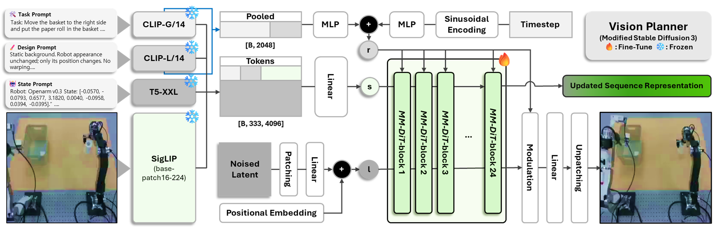
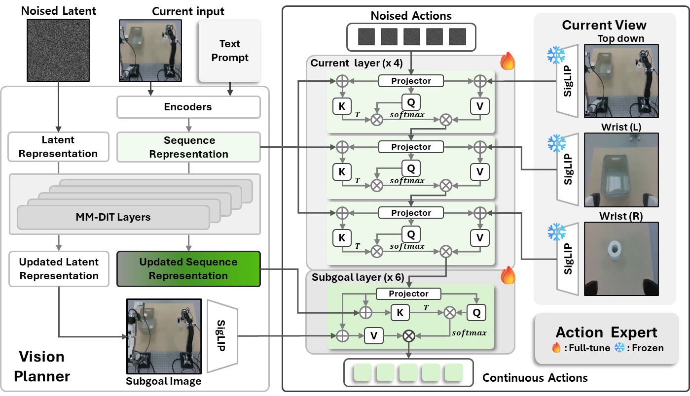
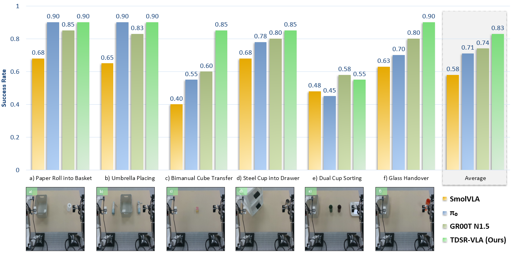
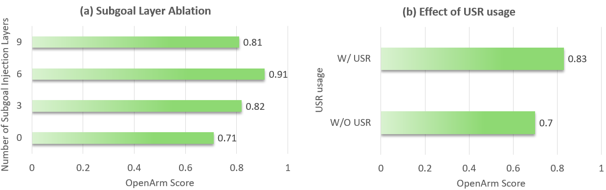

Plan a reachable future
A Stable Diffusion 3 Vision Planner takes the language instruction, robot state, and current camera view, then predicts a subgoal image representing a reachable scene at a fixed future horizon.
* Equal contribution. † Corresponding authors.
Vision-Language-Action (VLA) policies often become brittle under deployment distribution shift when only limited target-domain demonstrations are available. Subgoal-image planning addresses this issue by providing an explicit visual target. However, the target image specifies what future scene to reach, not how the robot should transition toward it. We propose TDSR-VLA, a VLA framework that reuses conditioning states from a diffusion-based Vision Planner to guide action generation.
The Vision Planner predicts a subgoal image and provides a Sequence Representation (SR) grounded in the current observation and an Updated Sequence Representation (USR) refined during denoising steps. A flow-matching Action Expert generates continuous action chunks through layer-wise prefix key-value conditioning. On real-world OpenArm tasks, TDSR-VLA achieves an average score of 0.83, outperforming GR00T N1.5 (0.74), π0 (0.71), and SmolVLA (0.58). On LIBERO, it reaches 82.0% on Goal and 56.0% on Long without robot-demonstration pretraining.
TDSR-VLA decouples visual planning from action execution. Instead of asking one policy to learn both what future state to reach and how to reach it from limited demonstrations, a diffusion-based Vision Planner first constructs a future-oriented plan. A flow-matching Action Expert then turns that plan into a smooth continuous action chunk.
A Stable Diffusion 3 Vision Planner takes the language instruction, robot state, and current camera view, then predicts a subgoal image representing a reachable scene at a fixed future horizon.
During denoising, the planner retains two normally discarded hidden sequences: SR anchors control to the current observation, while USR captures plan-aligned transition information refined toward the subgoal.
The Action Expert injects SR and current-view features into lower layers, and USR with subgoal-image features into upper layers. Conditional flow matching jointly produces a coordinated action chunk instead of predicting actions one by one.


Across simulation and real-world bimanual manipulation, TDSR-VLA shows its largest advantage on tasks that require long-horizon reasoning and tight coordination. The ablations further indicate that the gain comes from preserving the right balance between current-state grounding and subgoal guidance, rather than from the subgoal image alone.
0.83
TDSR-VLA outperforms GR00T N1.5 (0.74), π0 (0.71), and SmolVLA (0.58) across six real-world bimanual tasks. Its 95% bootstrap confidence interval is [0.767, 0.879].
0.88
On object-cooperative tasks, TDSR-VLA reaches 0.88 versus 0.70 for the strongest baseline, a +0.18 gain that highlights more reliable coordination and handover behavior.
82 / 56
Without robot-demonstration pretraining, TDSR-VLA achieves 82.0% on LIBERO Goal and 56.0% on LIBERO Long, exceeding OpenVLA on both suites and π0 on Long.
+0.13
Replacing SR with the denoising-refined USR in subgoal layers raises the OpenArm score from 0.70 to 0.83, supporting the value of plan-aligned transition cues.


@inproceedings{kim2026tdsrvla,
title = {TDSR-VLA: Transition-aware Denoising Sequence Representations for Vision-Language-Action},
author = {Kim, Dongwoo and Song, Keunho and Lee, Seungmin and Ju, Hwanhee and Cha, Eun Sang and Kim, Daekyum},
booktitle = {European Conference on Computer Vision (ECCV)},
year = {2026}
}